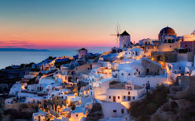
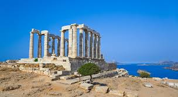
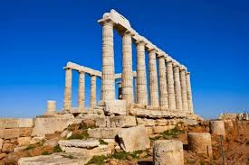

Тёплый климат, изумительные по красоте ландшафты и памятники античной эпохи делают Грецию идеальным местом отдыха. Лучше всего отправиться туда в сентябре—октябре, когда цены не так «кусаются», а солнце не припекает, как летом



С запада, востока и юга берега Греции омываются тёплыми морями
В Центральной Греции на неприступных скалах гористой Фессалии приютились «висячие монастыри». Первые обители появились здесь в XIV в., а в период наивысшего расцвета их число достигло 24. В наши дни доступ
; туристам открыт в 4 монастыря, а 2 из них (мужской и женский) действуют доныне. Когда-то в монастыри можно было попасть только в подвесных корзинах. Сегодня наверх ведут вырубленные в скале ступени.
Греция — один из самых слаборазвитых членов ЕС. В её экономике доныне важную роль играет сельское хозяйство, в т. ч. традиционное овцеводство
В 960 г. на горе Афон (п-ов Халкидики) зародилось крохотное государство православных монахов, доныне сохранившее автономию и живущее по средневековым законам. На Афоне действуют только мужские обители, доступ женщинам туда закрыт. Благодаря многовековой изоляции здесь сохранились великолепные памятники архитектуры, а в сокровищницах хранятся ценнейшие произведения искусства и рукописи, собранные со всего Балканского региона.
3 Коринфский канал, со- 3 I единяющий заливы Ко ринфский и Сароникос,
обеспечивает судоходство 7 между восточным и запад- || ным побережьем Греции в |{
обход полуострова Пело поннес. Канал (длина
6,3 км, ширина 24,6 м) был 1 ^проложен в 1881—93 гг.0д
ФЛОРА И ФАУНА
В далёком прошлом основу естественного растительного покрова составляли лиственные массивы из различных видов дуба и кипариса,
а в горах шумели сосновые леса.
В значительной мере они были вырублены ещё в древности, а их место заняли пастбища, виноградники и оливковые рощи. На заброшенных земледельцами участках появлялись древесно кустарниковые заросли — маквисы, состоящие из карликового дуба, ладанника, мирта, можжевельника, древовидного вереска, розмарина и других тра вянистых растений. Кое-где растут завезённые из Америки опунциии агавы. В настоящее время леса (часто это молодые рощицы низко рослых деревьев) занимают ок. 20% территории страны. Первичный высокоствольный лес сохранился лишь кое-где на северо-западе Греции, занимая не более 2,6% территории. Существенно изменился и видовой состав животного мира — наибольшее разнообразие отмечается в приграничных с Албанией и Македонией районах, где всё ещё водятся бурые медведи, волки и шакалы, а высоко в горах гнездится беркут, белоголовый сип и сокол-сапсан
ИСТОРИЯ
Истоки греческой государственности восходят ко II тысячелетию до и. э. Древнейшими центрами Эллады бы ли Микены и Тиринф. Примерно с 1200 г. до н. э. началось формирование полисов (городов-государств с подчинёнными им колониями).
Греческая колонизация (VIII—VI вв. до н. э.) охватила всю Южную Италию, Фракию, Малую Азию и Черноморское побережье.
В VI в. до н. э. началось возвышение Афин и Спарты. На заре V в. до и. э. победы, одержанные в греко-персидских войнах, укрепили гегемонию Афин, что не могло не встревожить Спарту, приведя к конфликту между соперничающими полисами. Противостояние переросло в Пелопоннесскую войну, в которой Афины потерпели поражение, и во главе греческих городов встала Спарта. Внутренние раздоры ослабили Грецию, и вскоре она вошла в состав Македонского царства. Последний период расцвета Греция пережила при Александре Македонском, завоевания которого способствовали распространению греческой культуры по всему Ближнему и Среднему Востоку. В 146 г. дон. э. Греция стала провинцией Римской империи, после распада которой вошла в состав Византии. В XIV—XV вв. греческие земли шаг за шагом захватили турки-османы. Вновь страна обрела независимость только в 1830 г., после продолжавшейся 9 лет национально-освободительной революции. Границы и государственное устройство новой Греции определила Лондонская конференция. Страна стала сначала монархией, затем конституционной (1843 г.) и, наконец, парламентской монархией (1864 г.). В начале XX в. Греция участвовала в Балканских войнах
и 1 мировой войне, а в 1924 г. была провозглашена республикой. В годы II мировой войны Грецию оккупировали итало-германские войска. После освобождения (1944 г.) в стране разразилась гражданская война (1946—49 гг.), победу в которой одержали антикоммунисты.
В 1950-х гг. Греция, Великобритания и Турция вели спор за государственную принадлежность Кипра, который завершился превращением острова в суверенное государство. Греция является членом НАТО (с 1952 г.), ЕЭС (с 1962 г. ассоциированный,
с 1981 г. полноправный член)и Европейского Союза (с 1993 г.).
НАСЕЛЕНИЕ
Подавляющее большинство (95,5%) населения Греции составляют этнические греки. Среди самых многочисленных национальных мень шинств — македонцы, турки, албанцы и болгары. Почти всё население страны принадлежит к греческой православной церкви (98%). Естественный прирост населения не превышает 0,2% в год.
СЕЛЬСКОЕ ХОЗЯЙСТВО И ПРОМЫШЛЕННОСТЬ
Экономика Греции до недавнего времени зиждилась на сельском хозяйстве, и хотя
в наши дни оно сдаёт свои позиции в пользу промышленности и сферы услуг, связанной с туристическим бизнесом, его роль всё ещё велика. В целях повышения урожайности орошается свыше >/3 пахотных угодий. В масштабах всей страны почти 90% потребляемой воды используется для орошения. Основ ные культуры: виноград, оливки, цитрусовые, инжир, а также табак, хлопок, пшеница, ячмень и кукуруза. Важной отраслью экономики издавна является животноводство. Разводят в основном овец и коз, меньше — коров и свиней. Раскинувшаяся на тысячах островов Греция активно эксплуатирует морские богатства. В стране ведётся интенсивный лов рыбы, осьминогов и губок. Ведущее место в индустрии занимает переработка местной аграрной продукции. Повсюду действуют винодельни, маслобойни и консервные предприятия. Развиваются текстильная и хлопкопрядильная отрасли. Меньшее значение имеет добывающая (добыча бокситов, железных руд, цинка, свинца и бурого угля) и тяжёлая индустрия. В энергетическом секторе ведущее место занимает гидроэнергетика. Будучи страной т. н. «дешёвого флага», Греция имеет один из крупнейших в мире торговых флотов. Общий тоннаж торговых судов, зарегистрированных
в греческих портах, составляет
ок. 42 млн т (3-е место в мире). Главные порты: Пирей, Салоники, Патры и Волос.
/p>
Туризм
Мягкий климат и обилие памятников древности делают Грецию весьма привлекательной для туристов. Ежегодно в страну приезжает
ок. 11 млн иностранцев, главным образом из ФРГ, Великобритании и США. Доходы казны от туризма составляют почти 4 млрд долларов
в год. Основные туристи ческие потоки направляются в Афины, на п-ов Халкидики и острова Эгейского моря, в т. ч. Лемнос, Кос, Родос,
а также лежащий в Средиземном море Крит.
В центральные и северные
районы Греции туристы заглядывают гораздо
реже. Охраняемые территории составляют лишь 0,8% площади страны и сосредоточены на северо-западе.
В 1971 г. на заболоченных берегах мелководного озера Малая Преспа был создан одноимённый национальный парк. Расположенное в плоской котловине на границе с Албанией озеро пло щадью 44 км2 (греческая часть —
42 км2) зимой и весной заполняется дождевой водой и заливает окрестные луга, а его труднодоступные берега служат прекрасным местом гнездования для одной из крупнейших в Европе популяций пернатых (цапли, бакланы, колпицы, ибисы, выпи, большие пеликаны).
Полное название: Гре́ческая Респу́блика (греч. Ελληνική Δημοκρατία)
Площадь: 131 957 км2
Столица: Афины
Главные города: Афины, Салоники, Патры, Лариса
Глава государства: Прокопис Павлопулос
Глава правительства: Кириакос Мицотакис
Государственный строй: Парламентская республика
Денежная единица: евро
Численность населения: 10 741 165
Этнический состав: болгары, турки, ромы, македонцы, греки
Cредняя продолжительность жизни: 71,5 года (женщины 75, мужчины 68)
Естественный прирост населения: 1,14%
Языки: греческий
Вероисповедания: православие, католицизм, протестантизм